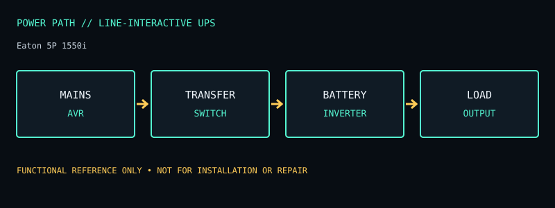

[ LINE-INTERACTIVE UPS // IDENTIFIED MODEL ]
Eaton 5P 1550i
230 V line-interactive UPS, 1550 VA / 1100 W with AVR and IEC output receptacles. This record documents the named model only; check the unit nameplate and its matching manufacturer documentation before service or installation.

ARCHIVAL IDENTIFICATION: Preserve the complete SKU, suffix, region, date code, manual revision, installed battery part number and observed condition. Similar model names do not prove identical hardware.
Model specifications & service record
| Subcategory | Line-interactive UPS |
|---|---|
| Topology / function | Line-interactive UPS with automatic voltage regulation (AVR); mains power is normally passed through the AVR path, with inverter transfer on outage/out-of-range supply. |
| VA and W ratings / outlets | 1550 VA / 1100 W; 230 V IEC version. Manufacturer documentation identifies eight IEC C13 and one IEC C19 output receptacle on the 5P1550i configuration. |
| Battery / replacement | Sealed lead-acid battery pack, replaceable under Eaton’s service instructions; battery packs are model-specific. Do not assume hot-swap compatibility across every 5P suffix. |
| Runtime / operating conditions | Eaton’s 5P model runtime curves depend on actual watt load and battery condition. Consult the 5P1550i curve for the connected load; quoted time is an estimate, not a guaranteed hold-up interval. |
| Interfaces / monitoring | LCD, USB and RS-232 communication; optional communication slot/accessories depend on 5P revision. Confirm software and cable support before relying on automatic host shutdown. |
| Electrical safety / limits | 230 V regional device; IEC C13 and C19 load current limits apply. Maintain ventilation and avoid exceeding 1100 W. Battery replacement, disposal, and service must follow the model’s manual; line-interactive AVR does not make this a double-conversion UPS. |
| Revision / variant identification | Use exact 5P1550i product code and region. 5P1550, 5P1550R, 5P1550iR and other suffixes have different connectors, orientation, or regional input/output arrangements; do not transpose outlet counts. |
Service & archival notes
- Record nameplate and battery labels before removal; separate measured behavior from manufacturer ratings and record load, input conditions, temperature and test date.
- Do not open an energized unit. Mains equipment and batteries can retain hazardous energy; have battery installation, disposal, and electrical work performed according to the product manual and local rules.
- For archival units, document missing covers, damaged cords, alarms, failed indicators, battery age/swelling/leakage, and any substituted part. Do not return a damaged unit to service.
- Product and manual links below are the primary reference for the named regional model. Verify exact revisions rather than transferring ratings from a similarly named SKU.
Manufacturer sources
- Manufacturer product specifications — Eaton 5P 1550iModel-specific ratings, regional identity, configuration and available documentation. Original page is gone; this is the Internet Archive’s copy.
- Manufacturer manual / product documentation and runtime referenceUse the manual matching the complete model code and revision. Runtime statements above describe manufacturer chart/conditions where available, not a guaranteed result for an aged unit.